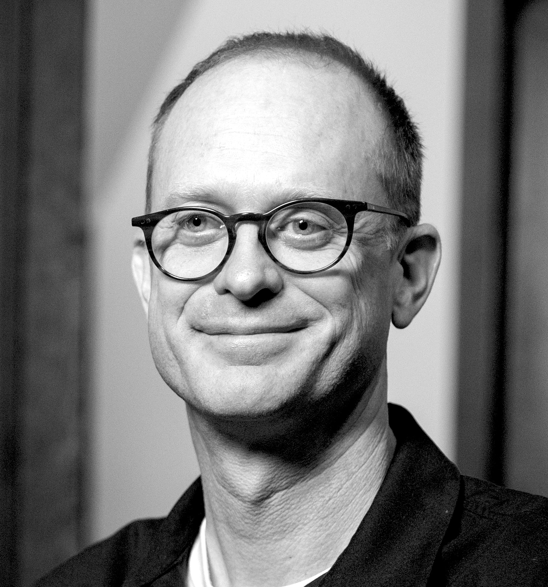

Evidence that actually changes minds
Customer and employee discovery, sharp synthesis, and the quotes and patterns that reveal what is really driving behavior.
A strategic path forward under uncertainty
When there are too many options, no clear story, and leadership misalignment, I help you cut through uncertainty to an evidence-backed direction your team can get excited about.
Bring the messy version. No prep required.

High-stakes initiatives, mature organizations, real constraints, clear decisions.
This is the pattern I see when operators are asked to invent the future inside organizations built to run in the present.
You do not need more analysis. You need a direction grounded in truth and gets everyone moving.
Outcomes
Customer and employee discovery, sharp synthesis, and the quotes and patterns that reveal what is really driving behavior.
A clear strategic spine: the simplest true story, the choice you are making, what you are not doing, and why this direction wins.
A 30 to 90 day plan for iterative learning and quick wins: what to test, what to stop, what to instrument, and how to build belief through progress.
This is not a report. It is a decision, a story, and a path your team can execute.
Approach
I am not a coach who only reflects and not a consultant who disappears into slides. I am a thought partner who goes deep, brings perspective, and creates alignment and action.
What is the decision you are actually trying to make, and what is the problem behind the problem?
Artifact: Crisp problem frame plus what must be true for any direction to work.
Focused discovery to surface what your organization is missing, not broad research.
Artifact: Insight brief with evidence and quotes.
Compress the sprawl into a few high-leverage insights and a single direction people can believe in.
Artifact: Strategic spine plus narrative you can use in the room.
Translate insight to decision to behavior to systems and metrics, tuned to your constraints.
Artifact: 30 to 90 day plan with experiments, milestones, and an alignment approach.
Mini-Case
Post-COVID, “Reimagining Reunions” was clearly important, but unclear what it meant, which direction to pursue, and how to align alumni, leadership, and staff.
The initiative moved from ambiguity and slow alignment to a shared direction that catalyzed momentum.
Testimonials
“Keith helped us move from broad ideas to a clear through line the leadership team could support and act on.”
Harvard Business School“He brought experimentation discipline and audience clarity that turned uncertainty into focused strategy.”
MIT Sloan Management Review“In a lonely innovation moment, his synthesis gave us language and energy to align across teams quickly.”
The Nature Conservancy“He helped us unlock a messaging puzzle where market resistance felt stubborn and hard to decode.”
Learning Seeds“His framing sharpened our ideal customer profile, clarified differentiation, and kept us focused on the bigger picture.”
Form + FunctionCommon thread: insight that changes minds, alignment that sticks, movement that matters.
About Keith
My work lives where politics, incentives, and legacy constraints are part of the terrain. I help teams find the simplest true story, pressure-test it, and turn it into a direction people can commit to.
My job is to be the editor of your organization's genius and help you turn it into belief and forward motion.
We will map what is stuck, what is actually being decided, and what would create belief.
Not you, but someone comes to mind? Forward this page.
ReadyFAQ
Often, yes, eventually. The issue is usually compression, confidence, and alignment. An outside partner helps you see the simplest true story faster, surface real tradeoffs, and make the narrative land in the room.
I do not rely on canned industry playbooks. I rely on targeted discovery, sharp synthesis, and decision architecture, so the direction is grounded in your customers, constraints, and strengths.
No. Discovery is a means to an end: a direction people believe and a near-term momentum plan that turns belief into movement.